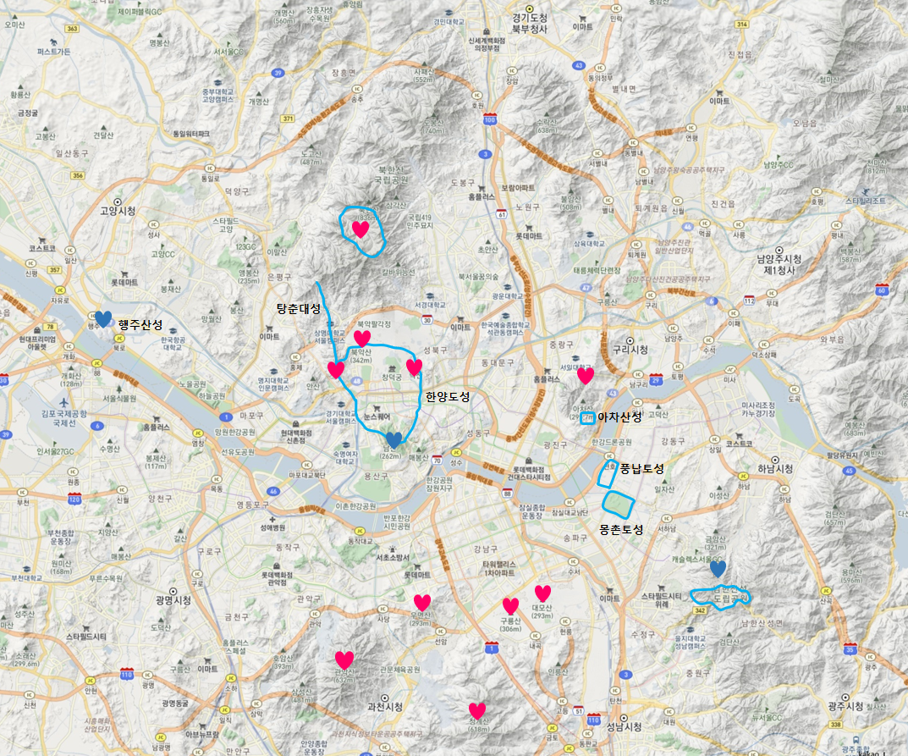

관악산(관嶽山, 629.9m), 삼성산(455m)



| 2020년 09월 27일 |
서울대 공동기기원, 수영장 능선, 연주대/나한전,
연주암, 자하동천, 과천향교, 과천역 |
느낀 점, 배운 것
- 사당능선 전망대에서의 서울 시내 전경이 일품이다. 여의도 불꽃 놀이를 봐도 아주 멋지게 보일 듯 하다.
- 남태령 방향으로 수도방위사령부가 있다.
- 매우 크고 험한 산이다. 지금은 위험 구간에 계단이 많이 놓여졌다.
- 관악산 북쪽은 서울시 관악구이고, 남쪽은 경기도 과천시다. 삼성산 남서쪽은 안양시이다.
일정
07:30 기상09:00 아침
10:00 출발
10:10 장원김밥
11:00 서울대 공동기기원
11:30 점심
13:00 연주대
14:00 연주암
17:00 과천향교
등산경로
하산길을 과천 또는 사당으로... 시간 차이만 있고, 힘듦의 정도는 비슷함. - 과천 하산: 약 4km, 계곡길로 내려가며 거리가 조금 짧다. 과천 맛집이 있다면 갈 수 있다.
조망 없음,
- 사당 하산: 약 5km, 능선길로 조망이 좋다. 서울 시내를 바라보는 것이 압권이다.
등산 시간이 조금 길어진다.
준비물: 쌍안경, 아빠점심, 과일(사과?/포도), 깔개, 보조배터리, 카메라(?), 생수
지하철 7호선: 반포역 - 숭실대입구역 (2번출구)
지하철 2호선: 강남역 - 서울대 입구역 (3번출구)
버스 5511: 숭실대입구역 - 공동기기원
총 소요시간: 1시간 (도보 포함)
버스 540, 9, 11-2: 과천성당 - 사당역 또는 고터
버스 4318, 143
총 소요시간: 50분 (도보 포함)
과천성당에서 오는 법: 540번 (고터까지)
9번 (사당역) - 4318
11-5(사당역) - 4318
관악산 정상 주변
| 서울 야경 |
 |
| 서울 전경 |